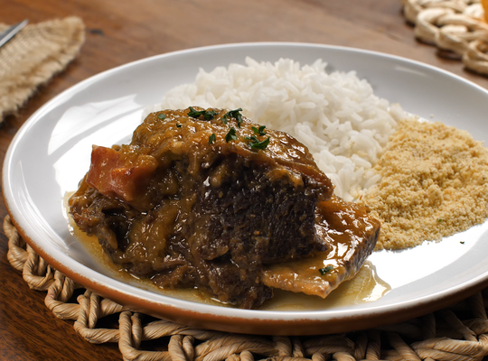

Ir para livro de receitas
COSTELA NA PANELA DE PRESSÃO

Ingredientes:
- 1 kg de costela bovina (sem muita gordura)
- 100 g de bacon sem pele
- 6 cebolas grandes
- pimenta-de-cheiro a gosto
- sal a gosto
Modo de preparo
- Tempere a costela com pouco sal e reserve.
- Descasque as cebolas e corte em rodelas.
- Pegue a metade das cebolas e faça uma camada no fundo da panela de pressão.
- Coloque a costela em cima da camada de cebola e acrescente o bacon.
- Cubra a costela e o bacon com a outra metade das cebolas.
- Tampe a panela e leve em fogo médio, por 45 minutos ou até que o líquido dentro dela seque.
- Não é preciso colocar água, a cebola e a costela vão soltar muita água.
Fonte:
Visite a receita direto em Tudo Gostoso